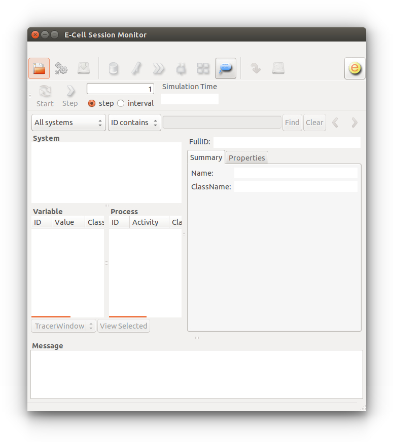

Molecules can diffuse and react in filament (1D), membrane (2D) and cytosolic (3D) compartments.
The effects of intracellular molecular crowding can be studied since each diffusing molecule has spatial dimensions.
Run multi-algorithm simulation with Next-Reaction, mass-action and lattice-based particle reaction-diffusion methods simultaneously.
Build and run models, log and plot data in Python. Simulation speed, however, is uncompromised thanks to C++ core algorithm modules.
Spatiocyte runs on Ubuntu Linux and Mac OS X Yosemite systems. On a fresh Ubuntu or a Mac OS X system, Spatiocyte requires several additional packages to run. To install these packages and Spatiocyte, open a terminal and execute the following instructions:
$ wget https://raw.githubusercontent.com/ecell/spatiocyte/master/install-spatiocyte-ubuntu.sh $ sh -x install-spatiocyte-ubuntu.sh
$ curl https://raw.githubusercontent.com/ecell/spatiocyte/master/install-spatiocyte-mac.sh $ sh -x install-spatiocyte-mac.sh
Enter your password when requested since some packages require the administrator privilege to install. If you have any issues during install, post the error messages to the Spatiocyte Users forum. On Mac, the installation script will take a longer time to finish executing because more packages need to be downloaded. We can use Blender to render simulation snapshots and VLC to view movies of the snapshots. Since the installation script does not install them on Mac, you can download and install them yourself from http://www.blender.org/ and http://www.videolan.org/.
Close and reopen the terminal for the installation to take effect. To test if the installation is successful, run the following command in the terminal:
$ ecell3-session-monitor
The above command will open the E-Cell Session Monitor, as shown below. You have now sucessfully installed Spatiocyte! If for some reason, the Session Monitor does not come up, please post the error message to the Spatiocyte Users forum.
Now try running a simple 1D diffusion Python model available in the examples/1D directory:
$ cd $HOME/wrk/spatiocyte/examples/1D $ ecell3-session 1D.py
The simulator will terminate itself once the simulation has ended. To view the simulated molecules, run the Spatiocyte Visualizer by issuing:
$ spatiocyte
More models can be found under the examples directory. To run them, follow the instructions in the README file in each example directory.